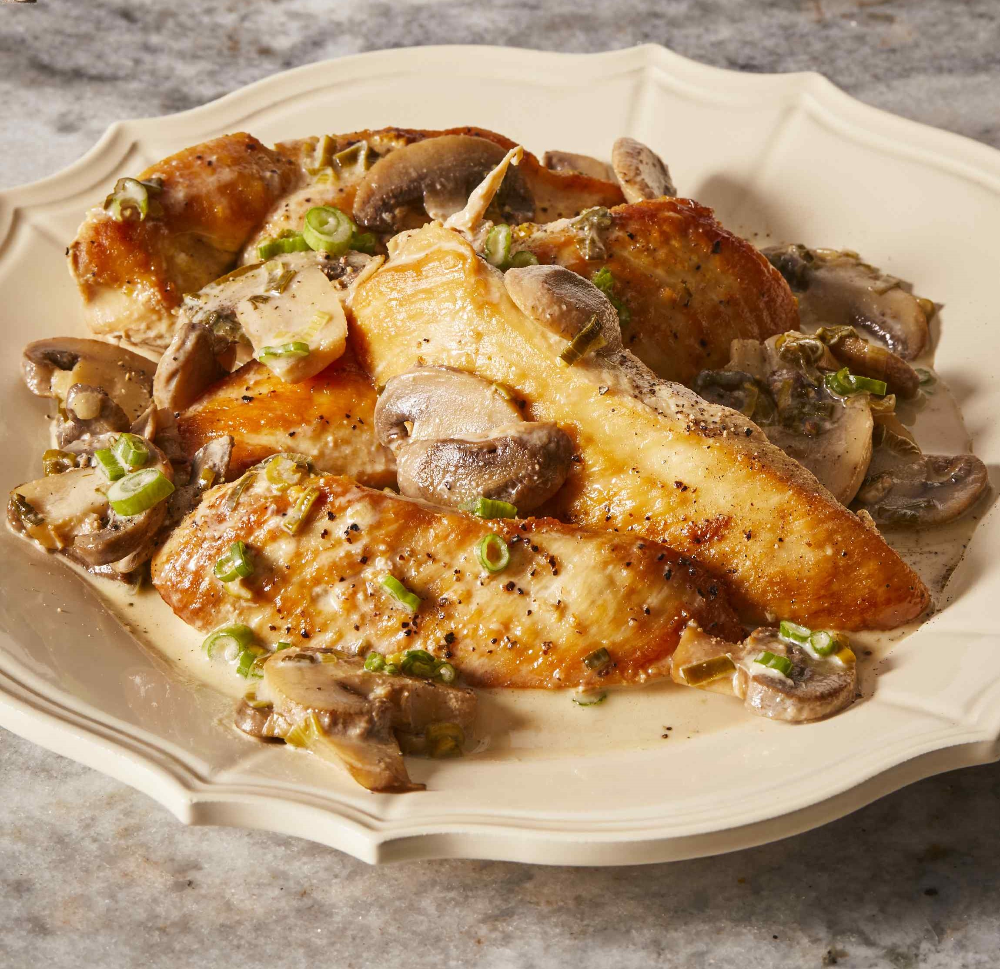

Chicken marsala

Chicken marsala is an Italian-style recipe for tender pan fried chicken breast
in a sweet marsala wine and mushroom sauce.
Ingredients
- 1/4 cup all purpose flour for coating
- 1/2 teaspoon salt
- 1/4 teaspoon ground black pepper
- 1/2 teaspoon dried oregano
- 4 chicken breasts, bone and skin removed - pounded 1/4 inch thick
- 4 tablespoons butter
- 4 tablespoons olive oil
- 1 cup sliced mushrooms
- 1/2 marsala wine
- 1/4 cup cooking sherry
Cooking directions
- In a shallow dish or bowl, mix together the flour, salt, pepper and oregano.
- Coat chicken pieces in the flour mixture.
- In a large skillet melt butter in oil over medium heat.
- Place chicken in the pan, and lightly brown.
- Turn over chicken pieces, and add mushrooms.
- Pour in wine and sherry.
- Cover skillet; simmer chicken for 10 minutes, turning once, until no longer pink and juices run clear.
Return to homepage